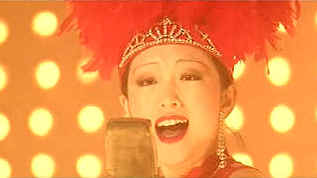

| Shanghai
Triad/A-,C+ |
| Columbia/1994/107/ANA
1.85 |
The brilliance of director Zhang Yimou is once
again realized with Shanghai Triad. Zhang's virtuosity plays brilliantly in the city or the
provinces. This time out Zhang delivers something akin to a Warner’s 1940’s gangster melodrama
with the added layer of a studied examination of mores and political matter. It is shot
differently than any of Zhang’s other films, much of it heavily filtered, creating a
nostalgic look for 1930’s Shanghai.
A young boy, Shuisheng, comes to Shanghai to work for the family gang. He
is given to Bijou, the boss’s moll, as a personal servant. The perspectives in Shanghai Triad
are all through the boys eyes. This is Zhang’s vision of lost innocence as the boy witnesses a
ruthless fight for the control of the mob which eventually entangles the beautiful Bijou.
 |
| Gong Li weaves an enchanting dance hall number.
©Columbia |
Bijou is played with chilling aplomb by
glorious Gong Li. As Shanghai’s popular chanteuse, Li wiggles her way through some entertaining
cabaret numbers, juggles her lovers, and moves through the film with imperial swagger. By the time
her icy veneer begins to melt, it is clearly too late for her redemption. Li Baotian is laughs a
crooked smile with grand malevolence as the boss of the Tang gang. Young Xiaoxiao Wang keeps his
cool under the perusal of Zhang's probing camera.
Shanghai Triad is such a beautifully shot film. The moody
photography is often so diffuse that it appears soft. Unfortunately, on this DVD transfer, far too
much edge enhancement has been used in an attempt to add detail, contrary to the intent of
the director. Nothing is all that clear in Shanghai Triad except the overpowering stench of
corruption. The haunting images are delivered with dreamlike precision. The camera is often close
enough to the actors and you catch reflections in their eyes. Colors are very delicate and the
various mood sections are accurately reproduced. The lovely score echoes with ringing clarity in
the background on this excellent Dolby Digital 2-channel surround mix. White English titles are
easy to read over the image and are removable. |
|
|
|
 
DVDPlanet is the DVD
incarnation of legendary laser retailer Ken Crane's. Deep discounts and serious service.
 Direct from the corridors of the Home Theater Forum, Home Theater Talk is the
newest place on the Net to discuss everything home theater. Friendly atmosphere and knowledgeable
folks are the secret ingredients. Direct from the corridors of the Home Theater Forum, Home Theater Talk is the
newest place on the Net to discuss everything home theater. Friendly atmosphere and knowledgeable
folks are the secret ingredients.

Home Vision Cinema
Classic and foreign motion pictures on VHS tape. The title
selection is excellent and informative essays are provided for many of the films.

The publication you can't do without if your interested in Movie
Posters.

Selections from the Feature Archive
include articles on Akira Kurosawa, Frank
Darabont, Blonde Bimbos, Hollywood Street Gangs, or Vietnam: The
Hollywood Pariah, and many more....
Epic Images of Kurosawa

Click on the image above for an original view of Akira Kurosawa's work
|